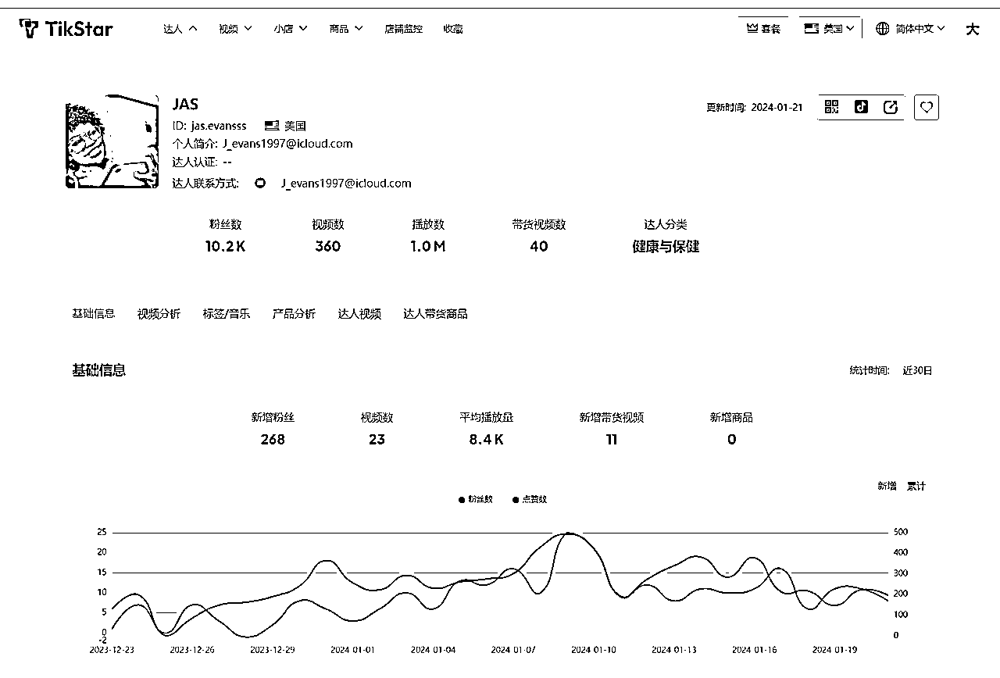

来源：https://za6kyadmdr.feishu.cn/docx/KIgzdUpiFor2ZUx1Atfc14rfnp4
anker12月小店销量榜排名44名 本次将会以anker的红人营销情况作为案例进行分析，同时文章尾部将分享达人实战技巧和经验，以及anker近期建联的五百个达人联系方式
01
小店销量榜
根据TikStar数据显示，截止到24年1月22日，ANKER TikTok美国小店总销量182.9K，销售金额490万美金
售卖产品数117个 均价$676.15 带货达人数2.1k 带货视频数5.3k 订单来源以达人为主
近三十日数据显示
新增销量：11.0K
新增销售额：474.1k
动销商品数：39
新增达人数：647
新增视频数：1.2k
可以看到 anker的策略非常清晰 大量BD达人，近一个月BD近650个达人，平均每天合作达人数22个
目前整个美区5000粉以上的达人有13w人 大家都在抢优质达人资源
02
达人分析
目前anker建联带货粉丝量排名前十的达人名单如下：
达人粉丝数破百万 达人分类多样
注意：
带货视频数与总视频数量的比例数据透析，
比例高的说明这个达人商业化布局非常熟悉了，是纯带货达人，比例小的可能刚开始接触带货合作，或者本身就比较爱惜羽毛，不会发很多带货视频
反过来：
带货视频的评价播放数据，可以粉丝量一起去观察，做一批初步筛选。如果发现该达人长期高粉低播放量，就可以大致得出一些判断标准
针对像anker这样的品牌推广类目标:一般来说，达人粉丝数越多推广效果越好，根据经验，选择100k以上粉丝数的达人更有可能达到预期推广目标
针对没有知名度的小品牌或者商家侧重销量提升类目标: 建议根据产品受众、价格带等等因素选择适合的粉丝
数，根据近7-14天的视频播放量和发帖勤奋度判断达人最新情况，粉丝量不是唯一的判断标准
关键因素
以中腰部达人为主，大粉丝量达人为辅
留意同类型产品开发的达人里面，粉丝不算多，但是播放数据可观的达人
tikstar可批量导出带货的达人信息
如anker近期带货达人的Ins 油管 邮箱等联系方式（联系皮皮获取500个达人联系方式表格）
观察达人的播放发现 高粉丝基数达人带货效果未必好
以KevinThatsWeird举例 粉丝基数3.5M 平均带货仅播放2.1k
进入TikStar查看达人详情页面
主要标签都是泛标签
主要带货视频分类:手机&数码
商家测试达人初期 数量对抗不确定性 大力才能出奇迹
03
商品销量分析
目前店铺主售品类是充电宝、充电器
anker小店带货产品117个 总带货视频5000+
ankerTT小店销量大头的sku 是622磁吸充电宝（MagGo系列）
售价39.99$ 和官网价格一致
佣金比例12% 总销量124.6k 近一月新增销量7.6k 累计销售额2.9M 带货达人数1.2k
去年年末旺季 单量单日冲刺到280+单上下
1月初单量下滑到70单左右
tikstar可每天观察到小店商品具体的出单详情
充电宝单品累计带货达人超过1000人
单产品充电宝带货视频数就达到2600+
04
产品播放情况
观察anker主账号播放情况
主账号422.8k粉丝 主要拍摄手法是开箱演示产品，有辅助结合真人剧情去布局内容，平均视频播放量：1万-3万+
https://www.pipiads.com/zh/tiktok-shop-store/7495149889289422928
观察投流情况：
目前anker整个打法都是朝着打造大爆品的玩法
主要打造产品是622和621这两款充电宝
广告数：482
anker622 广告数202条
anker621 广告数92条
主要给达人素材进行加热，主要投流素材产品是anker 622 磁吸充电宝，整个链路非常清晰，达人带货的同时，拿到达人生产的优质内容 同步进行广告投放引爆销量
广告展现最高视频素材40.7M
05
达人
达人建联筛选技巧：
熟悉产品是前提 集中打造热销爆款
| 产品阶段 | 达人类型建议 | 功能 |
|---|---|---|
| 新品上市 预热与曝光为主 | 传播型达人为主 | 多人群种草 造势 全面轰炸 |
| 带货与转化 以结果导向 | 垂类达人为主 跨圈达人为辅 | 竞争人群种草 拿优秀转化数据 |
| 数量对抗不确定性 |
了解自身产品大致目标受众性别、年龄段、兴趣等受众信息以及需要留意和匹配的达人信息
| 基础数据 | 了解达人 | 粉丝群体、粉丝量、粉丝粘性、创作风格 |
|---|---|---|
| 账号类型 | 达人的带货潜力和商业价值 | 人设/内容、合作情况、带货数量、带货质量、视频质量 |
| 匹配度 | 人群与产品的匹配度 | 人设/内容、 粉丝群体、粉丝画像、内容质量。 |
| 性价比 | 合作性价比 | 视频质量、 带货数据、 带货佣金、 是否有附加费用 |
| 长期趋势 | 达人的发展趋势 | 粉丝增长情况、账号健康度、达人的内容更新频率 |
| 合作难易 | 达人的粉丝量和商业化情况 | 粉丝少质量高的尾部达人、刚开橱窗带货较少的达人、未拿到大结果的的达人、新兴达人等可特别关注 |
第一步通过带货类别及带货分类筛选出垂类达人
第二步-观察基础的指标来判断达人画像：
粉丝量、带货商品、带货商品量、新增带货视频、视频互动率、平均播放量、标签音乐
低粉高播放量 （潜力达人）
多带货量 高销量 （成熟达人）
内容垂直 高互动率 高客单价 （高价值达人）
低带货数 多视频数 （待挖掘达人）

第三步：达人带货商品分析
判断达人带货意向 分析主要带货商品的带货销量，进一步获取达人的带货特征
如该博主带货主要分别 美妆个护 运动户外 女装等产品
再通过他的客单价70美金-10美金的产品都包含
看出这位达人带货的要求相对宽松
达人建联框架pdf（联系皮皮获取）:
红人沟通小tips补充：
红人约束tips：
达人的交付和约束
达人不按照要求发布内容，不回消息不发布内容，怎么办？
尽量规避和约束
规避：对于已经有一定带货数量的达人 他已经有了合作基础后，骗样品这种坏口碑的事情他们一般不做，通过跟她建联的过程 获取和判断他的意向，例如对这个事情的兴趣度，对这个事情是否上心，是否愿意跟你进行有效沟通
约束：通过官方平台建联
红人合作注意事项：
海外红人合作难题分析
红人合作注意事项总结：
tikstar是一站式 Tik Tok美区小店数据分析平台、涵盖带货达人库、视频库、小店库和商品库以及各类榜单，支持筛选优质达人、批量查看达人联系方式、寻找低粉爆款潜力视频、分析小店及商品数据等功能
#tikstar带货达人榜单周榜
带货达人榜以带货视频的播放增长速度为衡量指标，可以更客观得评判带货达人的带货视频质量，更多的播放量以及更高的增长速度，往往意味着产品的大卖。同时辅以带货商品数和新增带货视频，可以快速了解达人是否为积极的带货博主。通过最近带货一栏可以迅速了解达人近期带货的产品，直观的表现达人带货的具体偏好。
#tikstar达人涨粉榜单周榜
带货达人榜以粉丝增长率为排名指标，抹去了大小达人之间的基数差距，更客观地呈现每周、每月的涨粉达人。搭配带货视频和平均播放数，可以大致把握该达人的视频质量以及带货经验。
#查询Tik Tok美国小店销量榜
销量的增长往往意味着正确的运营和爆款的存在，而增长率则更有助于挖掘刚刚起步的竞争对手。小店销量榜可以帮助你快速定位并挖掘出销量正处于井喷阶段的小店。带货达人数和带货视频数则是另外2个重要的参考指标，可以判断小店商品被达人接纳的程度以及是否被市场认可。
#查询小店商品销量榜
商品销量榜展示销量增速靠前的商品，支持全品类检索。除了常规的销量、增速和佣金比例数据外，还提供带货视频播放量、带货达人数和带货视频数，可以更直观的看到销量增长背后的机会。销量基数小，但销量爆增的产品，且带货视频和带货达人都很少，则往往意味着可以迅速抢入，分享早期爆款红利。
#查询热推商品榜
热推商品榜以播放增速为排列指标，支持全品类检索，反映有哪些商品正在被推广/投放。可先于爆款产生前，快速了解业内同行正在进行哪些测款/推广。
#查询全托管爆品榜
全托管爆款榜与商品销量榜相似以销量增速做为排列指标，唯一的差异是全榜的商品均来自全托管店铺。
#小店销量监控功能
店铺监控为需要细腻了解竞争对手的用户提供了强有力的支持。
支持按分组监控/统计小店数据，看板提供今日、昨日、近7日和近30日的维度统计。
独享数据服务，每个店铺的数据（包括销量、商品数、带货达人数和带货视频数等）均单独统计，每小时更新一次，以获得更精确的数据。
储存历史监控方便找回，并支持监控数据导出。
和皮皮建联：